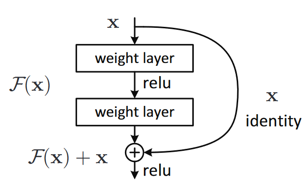

如果不想听我叨叨的话可以直接前往代码部分进行copy，并参照注释里的demo进行使用
前言
在上学期的机器视觉大作业中我用到了ResNet50-Unet，寒假中做分类任务时又用到了ResNet，但是之前我用ResNet要么是pip之后直接import，要么是参照hw里面助教给的初始代码进行增删。本着搞懂ResNet这么一个经典模型的心态，我决定自己手搓一遍ResNet（好吧其实还是有参照，但是在参照的基础上加了一点东西）。
ResNet基本思想
ResNet通过引入直接连接的旁路（shortcut），减少了反向传播时梯度消失的问题，使得模型能搭的更深，更不容易过拟合。
下表是各种CNN架构在ImageNet数据集上的top-5 error rate，可以看到ResNet相比VGG等其它架构，有着更好的效果。

代码
1 | """ |
各部分详解
Residual block
在ResNet的原始论文中，提出了如下图两种residual block，右边的一种被称为bottleneck。前一种residual block在ResNet层数较浅时使用，如ResNet18，ResNet34；后一种residual block在ResNet层数较深时使用，如ResNet50、ResNet101、ResNet152。

resblock_basic类
前向传播过程：residual block前向传播的过程，要经过两次卷积+batch normalization，其中第一次卷积、batch normaliztion后，需要经过ReLU，而第二次卷积+batch normalization后，会和通过shortcut path的输入一起进行ReLU。
输出channel数：block中，两个卷积层输出的channel数是相同的。
降采样方法：residual block里面不设置max pooling，而是通过卷积层中设置大于1的步长起到降采样的作用，一个block中只有第一层卷积层中的stride可能大于1，第二个卷积层的stride为1。
padding：由于卷积核大小为3x3，所以两个卷积层的padding都应该为1。
shortcut path：shortcut path可能会遇到两种情况，如果residual block的输入面积和channel数和第二个卷积层的输出相同，那么shortcut path不需要做任何操作；如果输出面积和输入面积不同，或者输出和输入channel数不同，那么需要在shortcut path中加入1x1卷积层和batch normalization进行降采样。
resblock_bottlenect类
前向传播过程：residual block前向传播的过程，要经过三次卷积+batch normalization，其中前两次卷积、batch normaliztion后，需要经过ReLU，而第三次卷积+batch normalization后，会和通过shortcut path的输入一起进行ReLU。
输出channel数：block中，前两个卷积层输出的channel数是相同的，而第三个卷积层输出的channel数是前两层的四倍。
降采样方法：一个block中只有第二层3x3卷积层中的stride可能大于1，第一、三个1x1卷积层的stride为1。
padding：由于第二层卷积核大小为3x3，所以第二个卷积层的padding应该为1。
shortcut path：shortcut path可能会遇到两种情况，如果residual block的输入面积和channel数和第二个卷积层的输出相同，那么shortcut path不需要做任何操作；如果输出面积和输入面积不同，或者输出和输入channel数不同，那么需要在shortcut path中加入1x1卷积层和batch normalization进行降采样。
resnet类
在原始论文中，ResNet要先经过一个7x7卷积层，然后在经过若干个residual block，最后通过FC得到输出。
预卷积层：原始论文中，预卷积层卷积核大小为7x7，所以padding=3，该卷积层步长为2，起到降采样作用，输出channel数设置为64。
residual block序列：中间的residual block序列可以用 nn.ModuleList存放，通过 _make_block函数循环添加。
自适应平均池化层：将特征图自适应转化为序列。
全连接层：设置0.25 dropout率，然后再全连接。
References
- Kaiming He, Xiangyu Zhang, Shaoqing Ren, Jian Sun. Deep Residual Learning for Image Recognition https://arxiv.org/abs/1512.03385v1
- https://github.com/weiaicunzai/pytorch-cifar100/blob/master/models/resnet.py
- 《深度学习计算机视觉》 Mohamed Elgendy, page 191-197
作者: 核子